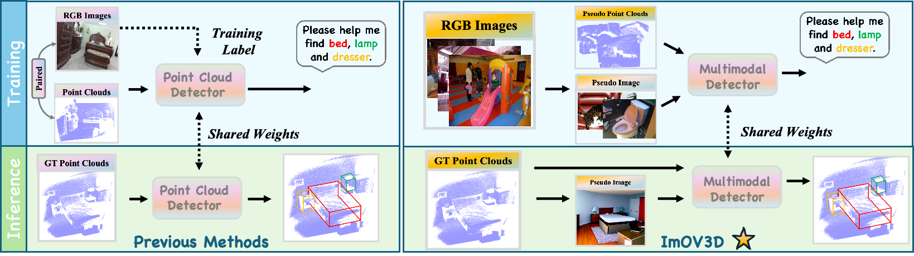

If you have any questions, please feel free to contact us:
- Timing Yang: timingya@usc.edu
- Yuanliang Ju: yuanliang.ju@mail.utoronto.ca
Open-vocabulary 3D object detection (OV-3Det) aims to generalize beyond the limited number of base categories labeled during the training phase. The biggest bottleneck is the scarcity of annotated 3D data, whereas 2D image datasets are abundant and richly annotated. Consequently, it is intuitive to leverage the wealth of annotations in 2D images to alleviate the inherent data scarcity in OV-3Det. In this paper, we push the task setup to its limits by exploring the potential of using solely 2D images to learn OV-3Det. The major challenges for this setup is the modality gap between training image and testing point cloud, which prevents effective integration of 2D knowledge into OV-3Det.
To address this challenge, we propose a novel framework just have ImOV3D to leverage pseudo multimodal representation containing both images and point clouds (PC) to close the modality gap. The key of ImOV3D lies in flexible modality conversion where 2D images can be lifted into 3D using monocular depth estimation and can also be derived from 3D scenes through rendering. This allows unifying both training images and testing point cloud into a common image-PC representation, encompassing a wealth of 2D semantic information and also incorporating the depth and structural characteristics of 3D spatial data. We carefully conduct such conversion to minimize the domain gap between training and test cases. Extensive experiments on two benchmark datasets, SUNRGBD and ScanNet, show that ImOV3D significantly outperforms existing methods, even in the absence of ground truth 3D training data. With the inclusion of a minimal amount of real 3D data for fine-tuning, the performance also significantly surpasses previous state-of-the-art.
Overview of ImOV3D: Our model takes 2D images as input and puts them into the Pseudo 3D Annotation Generator to produce pseudo annotations. These 2D images are also fed into the Point Cloud Lifting Module to generate pseudo point clouds. Subsequently, using the Point Cloud Renderer, these pseudo point clouds are rendered into pseudo images, which then get processed by a 2D open vocabulary detector to detect 2D proposals and transfer the 2D semantic information to 3D space. Armed with pseudo point clouds, annotations, and pseudo images data, we proceed to train a multimodal 3D detector.

(a) The rotation correction module involves processing an RGB image through a Normal Estimator to generate a normal map. This map then helps extract a horizontal surface mask for identifying horizontal point clouds, from which normal vectors are obtained. These vectors are aligned with the Z-axis to compute the rotation matrix. (b) In the 3D box filtering module, prompts related to object dimensions are first provided to GPT-4 to determine the mean size for each category. This mean size is then used to filter out boxes that do not meet the threshold criteria.
| Stage | Data Type | Method | Input | Training Strategy | SUNRGBD mAP@0.25 | ScanNet mAP@0.25 |
|---|---|---|---|---|---|---|
| Pre-training | Pseudo Data | OV-VoteNet | Point Cloud | One-Stage | 5.18 | 5.86 |
| OV-3DETR | Point Cloud | One-Stage | 5.24 | 5.30 | ||
| OV-3DET | Point Cloud + Image | Two-Stage | 5.47 | 5.69 | ||
| Ours | Point Cloud | One-Stage | 12.61 ↑ 7.14 | 12.64 ↑ 6.78 |
| Stage | Method | Input | Training Strategy | SUNRGBD mAP@0.25 | ScanNet mAP@0.25 |
|---|---|---|---|---|---|
| Adaptation | OV-3DET | Point Cloud + Image | Two-Stage | 20.46 | 18.02 |
| CoDA | Point Cloud | One-Stage | — | 19.32 | |
| Ours | Point Cloud | One-Stage | 22.53 ↑ 2.07 | 21.45 ↑ 2.13 |
Generating Pseudo 2D data as an auxiliary part of 3D data is necessary. (a) shows the original 2D RGB images, (b) shows the 2D depth maps with 2D OVDetector annotations, and (c) shows the pseudo images with annotations from a 2D OVDetector. It can be observed that the Pseudo Image captures more useful information, which enhances the 3D detection performance.
(a) and (b) show the data volume ablation results. Under the adaptation setting, we used varying percentages of data volumes from 100% to 10% for training to determine the specific impact of data scarcity on model performance. It demonstrates that using 2D data for pretraining can help the model maintain high performance even with a small amount of 3D data. (c) illustrates transferability ablation results. 2D to 3D knowledge transfer strategy not only improves the model’s understanding of 3D shapes and structures but also significantly enhances the model’s generalization ability and detection accuracy across different datasets.

If you have any questions, please feel free to contact us:
@article{yang2024imov3d,
title={ImOV3D: Learning Open-Vocabulary Point Clouds 3D Object Detection from Only 2D Images},
author={Yang, Timing and Ju, Yuanliang and Yi, Li},
journal={NeurIPS 2024},
year={2024}
}